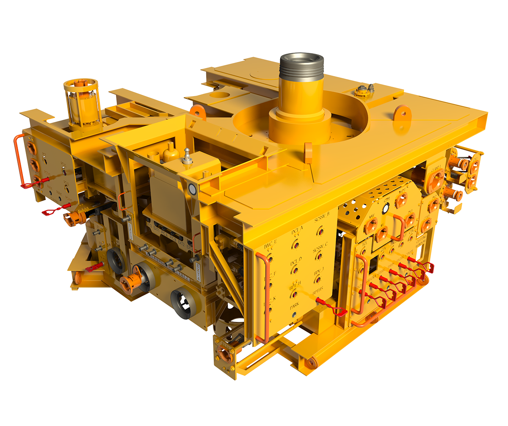

Christmas Tree (Oil & Gas)
Introduction: A Christmas tree in the oil and gas industry is a sophisticated assembly of valves, spools, and fittings installed on a wellhead. It meticulously controls the flow of hydrocarbons, playing a crucial role in regulating production, ensuring safety, and enabling essential well maintenance operations.
Components of a Christmas Tree: A typical Christmas tree comprises several key components, each serving a specific function:
- Master Valve: The primary control for the flow of oil and gas from the well.
- Wing Valves: Regulate the flow towards pipelines or processing facilities.
- Swab Valve: Facilitates well intervention and maintenance procedures.
- Choke Valve: Manages pressure and optimizes flow rate.
- Pressure Gauges and Sensors: Continuously monitor well conditions to prevent overpressure situations.

Types of Christmas Trees: Christmas trees are categorized based on installation and operational demands:
- Conventional Christmas Tree: Predominantly used for onshore and shallow offshore wells.
- Subsea Christmas Tree: Designed for deepwater wells, operated remotely.
